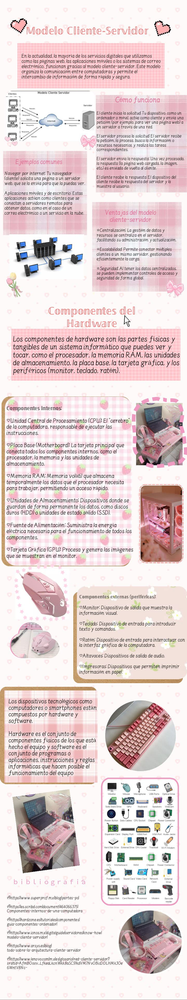

Modelo Cliente-Servidor
El modelo Cliente-Servidor es una arquitectura donde clientes envían solicitudes y servidores procesan y responden con recursos o información. Es la base de la mayoría de aplicaciones web y móviles.
Proceso de comunicación
- Cliente envía solicitud: HTTP/HTTPS desde navegador o app.
- Servidor recibe: Procesa la solicitud y ejecuta scripts del lado del servidor.
- Servidor consulta base de datos: Si requiere información dinámica.
- Servidor genera respuesta: HTML, JSON, XML, etc.
- Cliente recibe: Renderiza contenido y presenta al usuario.
En resumen, cada solicitud del cliente activa un proceso completo donde el servidor puede procesar datos, consultar bases de datos y devolver resultados al cliente de forma rápida y segura, permitiendo aplicaciones dinámicas y personalizadas.
Hardware mínimo para Servidores
El hardware necesario depende de la función y carga esperada de cada servidor.
- CPU/Procesador: 2-8 núcleos según tipo de servidor.
- RAM: 4GB mínimo, 32GB recomendado para bases de datos y servidores de aplicaciones.
- Almacenamiento: SSD mínimo 120GB; RAID para redundancia y seguridad de datos.
- Red: Conexión 1Gbps mínima, baja latencia y redundancia si es crítico.
Especificaciones según tipo de servidor
- Servidor Web: CPU 2-4 núcleos, 8GB RAM, 100GB SSD.
- Servidor BD: CPU 4-8 núcleos, 16-32GB RAM, 250GB SSD+RAID.
- Servidor Aplicaciones: CPU 4 núcleos, 8-16GB RAM, 200GB SSD.
- Servidor Correo: CPU 2-4 núcleos, 8GB RAM, 100GB SSD.
Estos recursos aseguran que cada tipo de servidor funcione de manera óptima, soportando múltiples solicitudes simultáneas sin afectar el rendimiento, garantizando estabilidad y tiempos de respuesta eficientes.
Servidores HTTP
Un servidor HTTP entrega contenido web a clientes mediante protocolos HTTP/HTTPS.
- Apache: Flexible, extensible, soporta módulos y .htaccess.
- Nginx: Ligero, rápido, eficiente en conexiones concurrentes.
- IIS: Integrado en Windows, administración sencilla.
- Lighttpd: Ligero, alto rendimiento para sitios pequeños.
- Caddy: Configuración automática de SSL, fácil de usar.
Funciones principales:
- Manejo de solicitudes HTTP/HTTPS.
- Balanceo de carga y caché.
- Registro de logs y control de errores.
- Seguridad: certificados SSL/TLS, protección contra ataques comunes.
Comparativa:
Apache: Muy configurable, ideal para entornos con módulos complejos.
Nginx: Mejor rendimiento bajo alta concurrencia, eficiente en memoria y CPU.
En conjunto, los servidores HTTP permiten que los clientes accedan a los recursos de manera rápida, segura y estable, formando la base de la comunicación web.
Lenguajes de Servidor
Lenguajes que se ejecutan en el servidor para generar contenido dinámico y gestionar la lógica de negocio.
- PHP: Fácil integración, gran comunidad. Desventaja: consumo de memoria elevado en grandes cargas.
- Python (Django/Flask): Código limpio y legible, frameworks robustos. Desventaja: menor rendimiento que Node.js en tiempo real.
- Node.js: JavaScript en servidor, eficiente para apps en tiempo real. Desventaja: manejo de CPU intensivo limitado.
- Ruby on Rails: Desarrollo rápido de aplicaciones web. Desventaja: consumo de memoria relativamente alto.
- Java (Spring): Robusto, escalable, ideal para empresas. Desventaja: curva de aprendizaje alta.
- Go: Muy eficiente, compilado, para microservicios. Desventaja: comunidad menor que PHP/Python.
Ejemplos de código:
<?php echo "Hola desde PHP"; ?>
console.log("Hola desde Node.js");
print("Hola desde Python")
Estos lenguajes permiten que el servidor procese solicitudes de manera dinámica, interactúe con bases de datos y genere respuestas adaptadas a cada cliente, formando el núcleo de la lógica de aplicaciones web modernas.
Sistemas Gestores de Bases de Datos (SGBD)
Permiten almacenar, organizar y acceder a datos de manera eficiente y segura.
- Relacionales: MySQL, PostgreSQL, Oracle. Datos en tablas con relaciones definidas, cumplen ACID.
- NoSQL: MongoDB, Firebase, Redis. Datos en documentos, clave-valor o grafos, escalables horizontalmente.
- Rol en aplicaciones web: Gestionan la persistencia de datos, consultas, transacciones y seguridad.
Tipos y ejemplos:
- Relacionales: MySQL, PostgreSQL, Oracle, SQL Server.
- NoSQL: MongoDB, Redis, Firebase, Cassandra.
Los SGBD garantizan que la información utilizada por las aplicaciones web esté organizada, accesible y segura, permitiendo que los lenguajes de servidor generen contenido dinámico de manera confiable y eficiente.
Integración de Conceptos
Todos los componentes de una arquitectura web trabajan juntos de forma coordinada:
- El cliente envía una solicitud HTTP/HTTPS.
- El servidor recibe la solicitud y ejecuta el código del lenguaje de servidor correspondiente.
- Si se requiere información dinámica, el servidor consulta la base de datos.
- El servidor procesa los datos y genera la respuesta.
- El cliente recibe la respuesta y renderiza el contenido para el usuario final.
Este flujo garantiza que cada parte —cliente, servidor, lenguaje de programación y base de datos— interactúe eficientemente, entregando aplicaciones web rápidas, seguras y dinámicas. Además, permite escalar y mantener sistemas complejos, integrando todos los componentes en un solo proceso coherente.
Mapa Conceptual
Imagen del Mapa

Infografía Animada
Diseños en Canva
Recursos visuales complementarios (abre en nueva pestaña):
🎨 Presentación: Servidores Web e Integración 📘 Infografía: Arquitectura Cliente-Servidor 🖼 Investigacion: Los HPPEstos enlaces son complementarios y te llevan a los diseños en Canva.
Fuentes
- https://www.w3schools.com
- https://developer.mozilla.org
- https://www.postgresql.org/docs/
- https://nodejs.org/en/docs/
- https://www.apache.org
- https://www.mongodb.com/docs/
- https://medium.com/
- https://dev.to/
- https://www.php.net/docs.php
- https://rubyonrails.org/